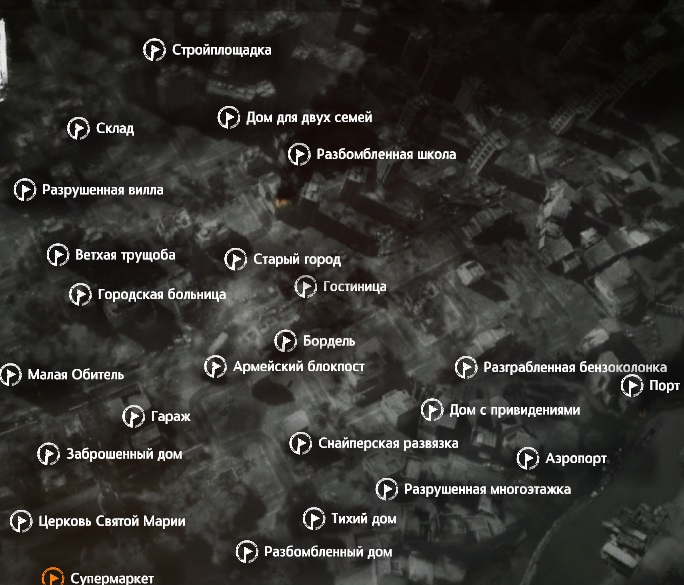

Локации
Локации, открываются в разном порядке, каждый раз, как вы начинаете игру. Вещи и даже окружение локаций тоже меняется.
В игре всего 24 локации, с разными вариациями событий.
Заброшенный дом
-
Описание
- Семья забаррикадировалась в доме, но грабители всё равно сумели туда вломиться. С тех пор дом стоит заброшенный. Тем не менее, мы можем найти там полезные вещи, которые пропустили или оставили грабители.
-
Рекомендации
- Проникнуть в дом можно только через подвал, т.к. входная дверь забаррикадирована с внутренней стороны.
- Необходимо иметь с собой: лом.
- Желательно: лопата.
-
Спойлер
- В случае, если в доме на первом этаже находится фотография отца с дочерьми, на втором этаже лежит записка, после прочтения которой в саду появится тайник со сломанным пистолетом.
Разбомбленная школа
-
Описание
- Эта школа несколько раз была под артобстрелом. Потолки многих погребов обвалились, поэтому лучше взять с собой лопату, и, возможно другие инструменты. Ходят слухи, что в здании обосновались какие-то бомжи (в версии 1.2.2 там может быть штаб ополченцев).
-
Рекомендации
- Необходимо иметь с собой: лом, 2 ножовки (решётка в классе на первом этаже с забитой изнутри дверью и на втором подвальном в левом конце)
- Желательно: лопата.
-
Спойлер
- Внутри могут быть ополченцы или бомжи
- С Ополченцами можно поторговать, но они могут стрелять, как только скажут "Тебе не следовало этого делать" и т.д., надо сразу бежать к выходу; бомжей можно просто обобрать.
- Имеются хорошие запасы не на один забег. Есть и закрытые помещения.
Разрушенный дом
-
Описание
- Семья забаррикадировалась в доме, но грабители всё равно сумели туда вломиться. С тех пор дом стоит заброшенный.
-
Спойлер
- Безопасное место, где полно всякого хлама. За три захода можно вынести почти всё, есть запертые двери. Без ломика или отмычки никуда.
Разрушенная вилла
-
Описание
- Говорят, что здесь живут какие-то люди, выжившие непонятно как. У них должны быть запасы: тушёнка, возможно бинты и медикаменты, но меняться они не будут.
-
Спойлер
- В этой локации есть множество припасов, но за них в любом случае придётся попотеть.
Их охраняет либо:
- пара мирных граждан, что готовы сражаться за них
- или дезертиры, у которых есть оружие и они не задаются вопросами, а сразу стреляют на поражение.
- В этой локации есть множество припасов, но за них в любом случае придётся попотеть.
Их охраняет либо:
Малая обитель
-
Описание
- Этот старый дом принадлежит пожилой семье и их сыну. Они остались здесь и каким-то образом умудряются отбиваться от грабителей. Вероятно, у них есть припасы, в том числе еда и медикаменты, но делиться они не захотят.
-
Спойлер
- Это многоэтажное здание. На этой локации может быть два события:
- Там внутри будут ходить 3 бандита, которые при обнаружении непрошенного гостя, сначала скажут убираться отсюда, а уже при отказе слушаться, либо повторном обнаружении, начнут стрельбу на поражение.
- Внутри живет семья из 3 человек - вооруженный сын и его пожилые мама с папой. Если вас обнаружит сын, то попытается прогнать, но при непослушании - пристрелит. Если же вас поймает один из родителей, то он тут же побежит к сыну говорить о вас, а тот в свою очередь будет бежать на вас с целью застрелить.
- Это многоэтажное здание. На этой локации может быть два события:
Супермаркет
-
Описание
- Этот супермаркет находится в районе, который контролируется военными, но люди до сих пор ходят сюда за провизией. Здесь можно встретить других добытчиков, но как правило, лучше им не мешать.
-
Спойлер
- В магазине могут произойти два события:
- на женщину нападёт солдат и попробует изнасиловать, если ей помочь, то герой получит + к морали. Если ей помочь, то во все последующие дни в магазине будет находиться соседка спасенной. Никакого вреда(как и пользы) от нее нет.
- На месте будут вооруженные люди, но они не окажутся агрессивными и позволят обыскать магазин и вам. Они обыскивают супермаркет и уходят оттуда в 1:00. Собирают лут (доказано). Иногда могут пользоваться ломом взламывая замки.
- Понадобится фомка или отмычки.
- В магазине могут произойти два события:
Тихий дом
-
Описание
- Жилой массив, который остался практически не тронутым. Это тихий район, застроенный не большими домами с крылечками и садами. В большинстве домов до сих пор живут люди, пытающиеся вести нормальную жизнь.
-
Спойлер
- Здесь находится один дом, где проживает пара. Они не враждебны, но будут защищаться, если вы проникните внутрь.
- Обокрав их, вы получите «-» к карме. Запасы провизии тут хороши и есть куча полезного хлама.
Снайперская развязка/Центральная площадь
-
Описание
- Центр города раньше был очень красив. Парки, площади и памятники, окружённые старыми зданиями. Теперь же из-за многочисленных случаев убийств мирных жителей, этому месту дали новое имя: "Снайперская развязка". Здесь можно найти ценные вещи, но это очень рискованно.
-
Спойлер
- На этой локации возможны два варианта событий:
- Здесь будет расположен рынок, где можно купить абсолютно всё.
- Улица будет под прострелом снайпера и придётся передвигаться перебежками, чтобы достичь дома.
- В первом случае дверь в левой стороне локации закрыта, туда можно вломиться с помощью лома или отмычки. За ней живут люди, они вооружены и могут пристрелить.
- В первом случае дверь в левой стороне локации закрыта, туда можно вломиться с помощью лома или отмычки. За ней живут люди, они вооружены и могут пристрелить.
- Во втором случае можно помочь раненому у статуи. Для этого добегите до дома, а потом пройдите по канализации и сломайте дверь. Спасенный даст припасов. В доме никого нет, можно безопасно вынести оттуда всё.
- Для проникновения во все помещения необходимы 2 ножовки.
- Локация богата и если тут будет снайпер, то можно из раза в раз возвращаться за припасами всех типов.
- На этой локации возможны два варианта событий: